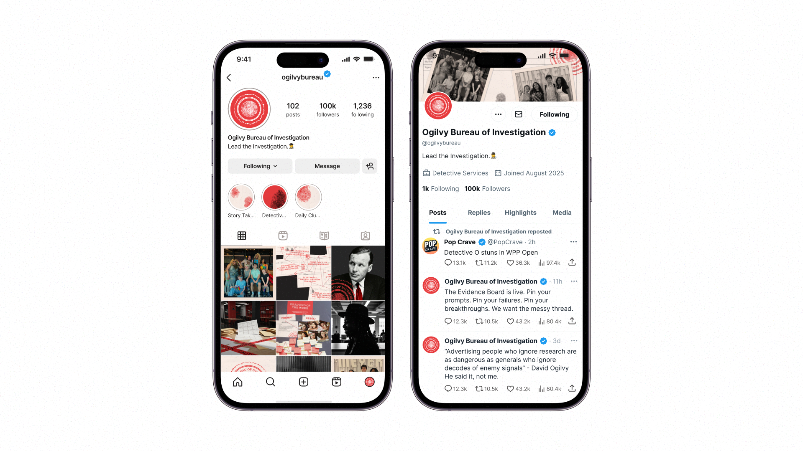

OGILVY BUREAU OF INVESTIGATION
How can we tap into the 22% of WPP Open non-users?
{kind=link}
Strengthening brand love between Walt Disney World and Hispanic-American families by showing that the stressful planning process is a part of the magic.
| ROLE | TEAM | SKILLS | TIME |
|---|---|---|---|
| Account Manager |
Reis Glover, PR Lead Fabiana Requena, Strategist Meghan Sim, Designer Molly Egan, Creative Lead |
Account Management Strategic Thinking |
6 Weeks |
BUSINESS CONTEXT
About WPP Open
WPP Open is WPP's intelligent marketing operating system powered by AI. It's an application, platform feature, and service that's transforming marketing with unparalleled levels of efficiency, creativity, and growth.
The Ask
Ogilvy seeks an internal marketing campaign that convinces the 22% of non-users to adopt WPP Open across North America to help reach WPP's goal of 80% adoption by end of 2025.
Probing the Brief
Enablement, Production, and Delivery are the highest departments with non-usage.
Non-Users by Department, 2025
| ROLE | TEAM |
|---|---|
|
25.5% 22.8% 15.4% 14.1% 11.4% 10.7% |
Enablement Production Delivery Client Services/Business Leadership Creative Strategy |
But numbers are always just symptoms. So we went hunting down the cause.
STRATEGY
Our Approach
We ran a survey.
We led interviews.
We met the 22%.
And they weren’t a monolith.
Through our office-wide interview interest survey, we first asked employees to self-assess their comfort with AI, to help us pinpoint those infrequent users.
From our interviews, we found two types of users with infrequent Open usage with a difference in their mindsets, barriers, and needs.
Personas
{kind=link}
The Gloomers are our practical skeptics. They’re not against innovation per se, but they see tools like AI as unreliable, generic, and ultimately a waste of time.
What holds them back is a belief that the tool’s output is too inaccurate, leading to extra work to clean it up. What they the most is proof of value, or evidence that the tool actually helps, rather than hinders, their work.
On the other side, we have the Doomers, our principled objectors. Their resistance is not about convenience—it’s about values. They see AI a tool that is undermining professional ethics, and even harming creativity. Their fear is deeper—it’s about losing what makes their work meaningful.
What Doomers need is a new philosophy—so this would be finding a new outlook towards AI usage as something that won't take away from their professional standards.
The Problem
We found that for both Doomers and Gloomers, skepticism is rooted in fear.
{kind=link}
Specifically of two things:
One, the fact that years of building a craft could be dismissed to a quick AI-generated result.
And two, lowering the quality of their work, which can harm their credibility in the workplace.
Reputation is incredibly invaluable. Losing that could have real consequences. So when people hesitate to use AI, it's not just about resistance to change—it's about protecting the integrity of what they do.
Call to Action
So how do we move forward? We think it’s time for a thoughtful shift in behaviors and attitudes towards Open in the workplace.
{kind=link}
For Gloomers, the shift is from Avoidance to Practical Application. That means showing how these tools can work for them and save them time.
For Doomers, the shift is from Principled Resistance to Critical Engagement. We don’t want them to apply their standards to how AI is used.
Essentially, the goal isn’t blind adoption. It’s to guide purposeful use and put users in control to feel empowered.
Key Insight
Ultimately, this led us to reframe how we view skepticism, and straight into our insight.
{kind=link}
Their concerns are not only valid—they’re necessary. They keep us grounded, intentional, and we should value them, So rather than fighting skepticism, we need to engage it. Learn from it. Build with it.
Because when we do that, we won’t just be adopting new tools—we’ll be doing it in a way that respects the craft, protects quality, and strengthens trust across the organization.
CREATIVE
At Ogilvy, we're all detectives at heart.
Skeptical. Curious. Late-night investigators, always chasing the "why."
We just haven't made it official, until now.
{kind=link}
We're launching the Ogilvy Bureau of Investigation, aka the OBI. A shared cultural space for Ogilvy employees to bond over their unique type of detective work and the tools that help them solve that work.
Manifesto
WE'RE FINALLY CALLING IT WHAT IT IS: DETECTIVE WORK.
We don't do quick fixes; we solve cases.
We question. We pry. We demand the why. We follow every thread, no matter where it ends.
Every damn time.
With no shortcuts. No trail left behind.
We solve the best and crack the hardest cases, using Open as our investigative edge.
So step in. Step up.
Lead the Investigation.
Stunt Launch: Capturing Attention
First, we’re turning Ogilvy North America offices into crime scenes.
{kind=link}
Why? Because when an idea flatlines, we all want to know why.
At Ogilvy, we don’t believe in creative complacency. We care about the work — and we believe the lifeblood of great ideas is worth protecting.
Next, cryptic posters will appear in office, hinting at what killed the work and stirring intrigue across Ogilvy North America.
{kind=link}
These posters will spark real conversation: What’s happening? What are these clues pointing to? And what is this stunt laddering up to? One poster reads: “When you stop questioning, the case goes cold.” Another warns: “False certainty is the killer of great work.”
Poster 2 specifically acknowledges the natural skepticism we have. It validates that skepticism as a professional asset rather than a barrier, which helps build trust. Instead of dismissing doubts, we lean into them and position the campaign as something that respects and even depends on that critical mindset.
Each poster lands on the creative wrap of our campaign — the tagline: “Lead the investigation.” In the corner, a partially revealed OBI logo offers a subtle clue of what’s coming next.
An evidence board with detective-style prompts appears in offices, leaving a clue for what's coming next.
{kind=link}
This board will feature detective-inspired prompts that encourage critical thinking, both about detective work and our own Ogilvy process.
Phrases like:
“Never trust the first idea.”
“Follow the evidence trail, not the assumptions.”
“Every detail counts... examine all the leads.
These prompts are designed to spark curiosity and conversation throughout Ogilvy North America, asking: "Why are we now in the detective’s den? What is this?"
This invites everyone to begin to step into the mindset of a real investigator — questioning, analyzing, and uncovering what lies beneath the surface.
The goal is of this to get people excited by this stunt, and encourage everyone to care more deeply and pay closer attention to the professional standards they uphold — treating the quality of work like a puzzle or case to investigate and improve.
Integrating OBI: The Learning Phase
In this phase, we give Ogilvy employees context for teasers and unveiling full campaign messaging, for people to get acquainted and learn about the OBI community.
{kind=link}
The OBI's first branded appearance happens on social media starring a new mysterious figure...
We're launching Detective O, OBI's Mascot.
He's sharp, intelligent, and believes that skepticism is key, just like all Ogilvy employees. He shows them that they've beeen detectives all along.
The goal of DO? To get AI skeptics to understand that their doubts on AI are welcome.
This a collaborative post between @ogilvybureau and @ogilvy for reach purposes.
@ogilvybureau will immediately drop employee-first content on on Instagram.
{kind=link}
We'll continue with employee-first social content, making sure that people see themselves represented in the OBI's mission and that skepticism is welcome.
In this post, we see Ogilvy employees "wearing the hat," which is Detective O's symbol and call to action.
The goal: teach all employees that Detective O isn't a character -- He's me, or He's all of us.
The Bureau is active across socials.
{kind=link}
On Instagram, you'll see Days in the Life as an OBI detective, story takeovers, and employee spotlights.
On X, you'll see more Detective O character building, updates on his WPP Open personas, WPP Open tips from detectives, as well as witty banter and sharp, inspiring quotes.
After a week on socials, we're announcing that Detective O has entered the chat...
The WPP Open chat.

D.O. is now a persona on on Open, designed to challenge employee's assumptions and push them further. A true skeptic, not an AI Yes-man.

We created this persona on Open with 2 main purposes: to help drive our campaign forward to change attitudes AND as a learning tool to help users master the agent feature on Open. We programmed it to be a skeptic, question their ideas, and give thorough evaluations of their asks.
We'll create other personas in the OBI Open Bureau, each reflecting different Ogilvy departments.
{kind=link}
We focused on production, enablement, and delivery as they are the departments with the least Open usage.
Sustaining Community: Involvement Around the Office
This brings us to our last phase. Here, we shift from the campaign buzz to prolonged OBI involvement, converting employee's familiarity with the OBI into active participation with the community.
The mindset here pushes forward past the non-user perception of Open as a threat to their standards, to a tool that helps them identify how they can interrogate their cases better, and shows that proof of value they need.
The evidence board from earlier? It's opening its first case: the Dead End of the Week— where employees post the WPP Open prompts that didn’t go as planned.
{kind=link}
This brings WPP Open offline and right into the office as a physical, shared workspace.
It’s a fun way to make experimenting with the tool visible, normalize learning through trial and error, and invite everyone in their local office to investigate together. This creates an active, collaborative hub for Open in the workplace.

Zooming into the Open Case Evidence Board, where Open's oddest outputs are under investigation.
Following the red string, detectives are asked, "How would you have prompted this investigation better?"
Above, you can see the Dead End comes from an Art Director who's having trouble generating a specific image.
All these sticky notes and red strings? The responses of our detectives who are on the case to better interrogate Open and get closer to the solve of the image.
At the bottom left corner, all employees are invited to submit a Dead End of their own to be featured the following week, and to encourage the learning of different uses and approaches to Open across departments.
We're launching The OBI Files, the Ogilvy North America newsletter covering the top, recent "Closed Cases" solved using WPP Open.
{kind=link}
Dropping twice a month, the OBI Files spotlight Open-powered campaigns. Here, you can see the Sprite account's Hurts So Good campaign that utilized Open, with a summary from the team detailing how they used it in their process.
The newsletter also shares skeptic-turn-champion stories, and Detective O.'s Open tips and tricks. The goal of the OBI families? To keep momentum and culture of the campaign alive past the stunt and learning phases.
Each edition features the OBI Open Solve, a challenge where Ogilvy employees use open to crack a case.
{kind=link}
This opportunity is open to all employees, in all departments. Given a challenge to solve, we provide hands-on prompts to work through and a reason for them to log in to Open.
The Open Solve encourages the utilization of any Open tool: the shower thoughts feature, video or image generation. Employees must submit their via form by the deadline. The top 3 solutions make the spotlight next issue, and...
{kind=link}
Those top 3 submissions win exclusive OBI merch.
Because who doesn't love merch?!
WRAP UP
Let's look ahead to the timeline and how soon we can integrate the campaign.
{kind=link}
After 2 weeks of prepping supplies, planning, and logistics, we believe that the campaign can start in August. This will also ensure enough time for employees to get familiar with our campaign as well as reach the 80% adoption goal by EOY.
Phase 1 will occur over Days 1-6. First come the in-office crime scenes, then the teaser posters, followed by the installation of the Evidence Board. The goal is to spark curiosity, buzz, and water-cooler chatter. Note that there is no mention of Open or Detective O just yet.
Phase 2 will occur over Days 7-11. First comes the Detective O reveal. From there, his snarky tweets, “wear the hat” posts, and social teasers will roll out. The goal is to establish Detective O's tone and invite low-pressure exploration to Open.
A week later, the Persona on WPP Open debuts - we'll invite employees to enter Open, and dabble with his character about anything regarding the OBI, to getting a hardhitting opinion on their work.
Phase 3 will occur starting Day 12 and on. At the start of the week, the evidence board launches as an interactive prompt hub. At the end of the week, Newsletter #1 launches. 2 weeks later, Swag is awarded and Newsletter #2 drops to celebrate the contributors.
Bi-weekly challenges, newsletters, and evidence board updates are ongoing to keep the momentum alive.
Mid-way through October, we'll gauge how well the the campaign is going, and if Open usage is up - if needed, we'll launch an energizer campaign using the Halloween tentpole as leverage.
{kind=link}
In measuring campaign success, we're looking at two key areas: how people are engaging with the campaign creatively, AND whether we’re actually changing behavior inside the platform.
So yes, we’ll track social traction, submissions, newsletter opens — but more importantly, we’ll monitor how often people come back to Open, how deeply they’re using it, and which departments are building it into their workflow.
Campaign Vision
At its core, this campaign celebrates healthy skepticism as the spark for mastery—positioning Open not as a crutch, but as the precision tool employees wield to interrogate every idea, prove their expertise, and fuel their curiosity.
We need a movement: A cultural, behavorial, and language switch to occur in office to showcase that employees really do wear the hats, and the work they do is much like being a detective. The work comes questions, a drive to find more and do better, and get to the bottom of things. A reminder that each and every employee is Detective O- someone who thinks deeply and is eager to put their best foot foward.
And lastly, we need a space where it's ok to have doubt and skepticism toward AI, and to understand it as our greatest asset and use it to bring ourselves to fullest ability.
So wear the hat. Lead the investigation.